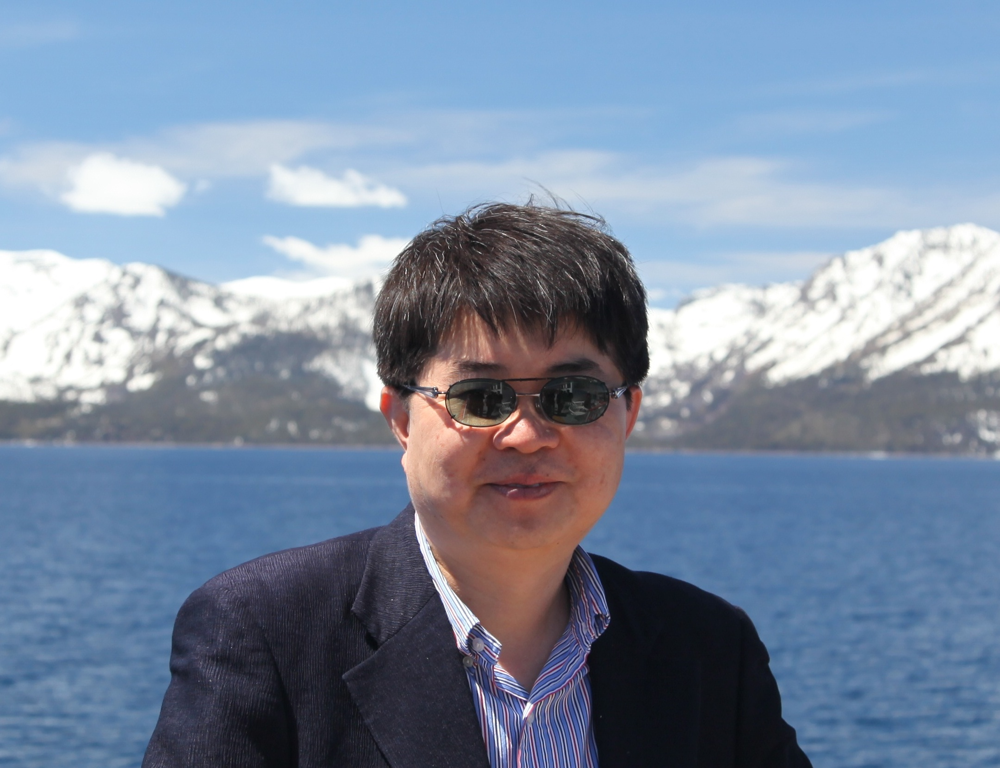

Sang-Won Lee
I am a professor at Graduate Schol of Data Science, Seoul National University .
Right before, I had been a professor in Dept. of CSE, Sungkunkwan University. Before joinng SKKU, I had been BK21 professor in EWHA EIST for one
year and worked for Oracle, Korea for two years. I received a Ph.D, a MS, and a BS degree from
CSE Department ,SNU in 1999, 1994, and 1991,
respectively.( OOPSLA Lab. )
You can reach me at swlee @ acm.org .
Research
Current Interests : GenAI-empowering database techniques, Database systems for NVRAM and flash memory
Recent Publications (See Google Scholar Citations Profile
or ACM Author Profile )
NV-PPL (SIGMOD '25)
NV-SQL (VLDB '23);
LRU-C (VLDB '23);
FlashAlloc (VLDB '23)
WAR (SIGMOD '22);
Prioritized Read (VLDB '22);
IPS (VLDB '22);
SaS (VLDB '21);
SQLite/SSL (VLDB '18);
SQLite/PPL (VLDB '15)
2R (VLDB '20);
FAST (ACM TECS '07);
FASTer (IEEE SNAPI '10); Recovery in FAST (SEUS '10);
SHARE (SIGMOD '16);
X-FTL (SIGMOD '13,
Invited to DE Bulletine>)
RM-IPU (HotStorage'22);
AFS (Usenix Hot Storage '18);
CFS (Usenix ATC '15),
SFS
(USENIX FAST '12, Test-of-Time Award in 2024 ),
IEEE Tran. on Computers );
DuraSSD (SIGMOD '14);
Advances in Flash SSDs (SIGMOD '09);
A Case for Flash SSDs in DBs
( SIGMOD '08, One of the most influential papers )
FaCE: Flash as Cache (VLDB '12), VLDBJ (Aug. 2016) );
PSynch (VLDB '12, Invited to DE bulletine) );
Optimizing Index Scans (SIGMOD Record, Dec. 2011)
IPL
(SIGMOD '07, One of the most influential papers );
tIPL (ICDE 2011);
IPL-P
(VLDB '11 demo, Invited to DE bulletine );
( d-IPL for B-tree (IEEE TKDE July 2012, CIKM '09);
SSD as Database Machine (ADMS '11)
On Social Web Sites (Info. Sys. 2010, Editor's Pick )
Copyright 2024 Sang-Won Lee. All rights reserved.